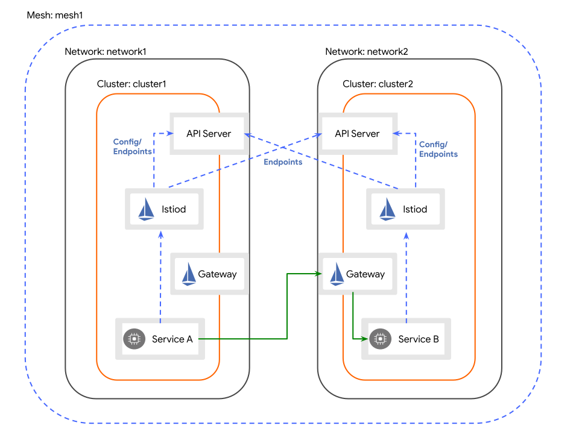

Istio Multi-Cluster East-West Debugging Guide
A comprehensive reference for debugging cross-cluster service discovery and endpoint propagation issues in an Istio multi-network, multi-primary setup.

Context
This guide was written while debugging a specific issue: in a multi-primary, multi-network setup between two clusters (cluster-2 and cluster-1), services from the remote cluster were being discovered but their endpoints were not appearing in local sidecars, causing 503 errors.
The root cause turned out to be that MCS (Multi-Cluster Services) mode was accidentally enabled on istiod, causing remote endpoints to be registered under *.svc.clusterset.local hostnames instead of *.svc.cluster.local. This guide documents the debugging journey and all the useful commands along the way.
Setup Summary
- Two clusters:
cluster-2(context:home) andcluster-1(context:bare) - Istio multi-primary, multi-network topology
- East-West gateways on both clusters
- A test service
test-east-westin themeshnamespace on both clusters discoverySelectorsconfigured to sync namespaces withtopology.divar.ir/east-west=true
The Debugging Ladder
When a service is discovered but has no endpoints in the sidecar, work through these steps in order:
- Do Kubernetes endpoints exist on the source cluster?
- Is Istiod connected to the remote cluster?
- Is Istiod reading the remote endpoints?
- Under what hostname is Istiod registering them?
- Is Istiod pushing them via EDS?
- Did the sidecar receive them?
- Can the sidecar reach them?
1. Verify Kubernetes Endpoints on the Source Cluster
Before blaming Istio, make sure Kubernetes itself has discovered the pods backing the service.
Expected: An EndpointSlice with one or more IP addresses.
If this is empty, the issue is with your Service selector or pod readiness — not Istio.
2. Verify Istiod's Remote Cluster Connection
Istiod must be connected to the remote cluster's API server to discover its services and endpoints.
Check the remote secret
kubectl --context=home get secret -n istio-system -l istio/multiCluster=true \
-o jsonpath="{range .items[*]}{.metadata.name}{'\t'}{.metadata.labels.istio/multiCluster}{'\t'}{.metadata.labels.topology\.istio\.io/cluster}{'\n'}{end}"
Expected: Each secret must have the topology.istio.io/cluster label set to the cluster name referenced in meshNetworks.
⚠️ If the
topology.istio.io/clusterlabel is missing, Istiod may register endpoints under the wrong cluster name. Add it with:
Check that Istiod has synced both clusters
kubectl --context=home exec -n istio-system deploy/istiod -- \
curl -s localhost:15014/debug/clusterz
What it shows: All Kubernetes clusters Istiod is watching, including the local one and any remote ones loaded via remote secrets.
Expected: Both clusters listed with syncStatus: synced.
[
{"id":"cluster-2","secretName":"","syncStatus":"synced"},
{"id":"cluster-1","secretName":"istio-system/istio-remote-secret-cluster-1","syncStatus":"synced"}
]
If syncStatus is not synced, check the kubeconfig in the remote secret and the RBAC permissions of the service account it represents.
3. Verify Service Discovery via registryz
kubectl --context=home exec -n istio-system deploy/istiod -- \
curl -s localhost:15014/debug/registryz | \
jq -r '.[] | select(.Attributes.Name == "test-east-west")'
What it shows: Every service Istiod knows about, regardless of source cluster.
Expected: The service entry should contain clusterVIPs for both clusters:
If only one cluster appears here, the remote registry isn't seeing this namespace/service. Check discoverySelectors and the namespace labels.
4. Verify Endpoint Discovery via endpointShardz ⭐
This is the most important step for our class of issue. It shows the raw per-cluster endpoint shards that Istiod has read from each Kubernetes registry, before any pushing to sidecars.
Always dump the full keys first
kubectl --context=home exec -n istio-system deploy/istiod -- \
curl -s 'localhost:15014/debug/endpointShardz' | jq '.shards | keys' | grep test-east-west
Why dump keys first: the same logical service may exist under multiple hostnames (*.svc.cluster.local, *.svc.clusterset.local, etc.). If you grep only for the hostname you expect, you'll miss MCS-style registrations.
Expected (in normal multi-primary):
What we actually saw (indicating MCS was on):
"test-east-west.mesh.svc.cluster.local"
"test-east-west.mesh.svc.clusterset.local" ← endpoints went here!
Then inspect the shards
kubectl --context=home exec -n istio-system deploy/istiod -- \
curl -s 'localhost:15014/debug/endpointShardz' | \
jq '.shards | with_entries(select(.key | contains("test-east-west")))'
Expected: A shard per cluster (Kubernetes/cluster-2, Kubernetes/cluster-1) under the cluster.local hostname, each containing pod IPs with their network labels:
{
"test-east-west.mesh.svc.cluster.local": {
"mesh": {
"Shards": {
"Kubernetes/cluster-1": [
{
"Addresses": ["10.235.66.187"],
"Network": "cluster-1",
"Locality": {"Label": "tehran/cluster-1/", "ClusterID": "cluster-1"},
...
}
]
}
}
}
}
If shards appear under clusterset.local instead of cluster.local, you're in MCS mode. See §9 MCS Pitfall.
If no shards appear at all, Istiod isn't reading endpoints from the remote cluster — check RBAC on the remote service account.
5. Verify Istiod's EDS Push
After Istiod reads endpoints from K8s, they must be packaged into EDS responses for sidecars.
kubectl --context=home exec -n istio-system deploy/istiod -- \
curl -s localhost:15014/debug/edsz | jq -r '.[].name' | grep test-east-west
What it shows: The names of all EDS clusters Istiod will push to proxies.
Expected:
If this is missing, Istiod has the endpoints but isn't building an EDS cluster for them — usually a config issue (e.g., misconfigured Sidecar or ServiceEntry).
6. Verify Sidecar Sync State
kubectl --context=home exec -n istio-system deploy/istiod -- \
curl -s localhost:15014/debug/syncz | \
jq '.[] | select(.proxy | contains("netshoot"))'
What it shows: XDS sync status (CDS, EDS, LDS, RDS) for each connected proxy.
Expected: All four should be SYNCED.
If something is STALE or not synced, the sidecar isn't receiving updates and the issue may be on the data-plane side.
7. Verify the Sidecar's View
Check the cluster exists
istioctl --context=home proxy-config cluster \
"$(khome -n mesh get po -lapp=netshoot --no-headers | awk '{print $1}')".mesh | \
grep test-east-west
Expected: A single line for the cluster.
⚠️ If you see two lines — one for
cluster.localand one forclusterset.local— that's the MCS smoking gun visible from the data plane.
Check the endpoints
istioctl --context=home proxy-config endpoints \
"$(khome -n mesh get po -lapp=netshoot --no-headers | awk '{print $1}')".mesh \
--cluster "outbound|80||test-east-west.mesh.svc.cluster.local"
Expected in multi-network mode: The endpoint IP should be the East-West gateway IP of the remote cluster, not the pod IP. This is how Istio handles multi-network routing — traffic is sent to the remote gateway, which terminates and forwards to the actual pod.
ENDPOINT STATUS CLUSTER
172.21.209.80:443 HEALTHY outbound|80||test-east-west.mesh.svc.cluster.local
172.21.209.81:443 HEALTHY outbound|80||test-east-west.mesh.svc.cluster.local
If empty: the sidecar has the cluster but no endpoints — work backwards through edsz → endpointShardz.
Or dump everything
istioctl --context=home proxy-config all \
"$(khome -n mesh get po -lapp=netshoot --no-headers | awk '{print $1}')".mesh \
-o json | grep -i clusterset
Any hit on clusterset is a sign that MCS mode is leaking into the data plane.
8. Inspect the Sidecar Directly (Envoy Admin Interface)
When you don't want to trust istiod's view of what was sent, ask Envoy itself.
kubectl --context=home exec -n mesh \
"$(khome -n mesh get po -lapp=netshoot --no-headers | awk '{print $1}')" \
-c istio-proxy -- curl -s localhost:15000/clusters | grep test-east-west
What it shows: The actual cluster state in the Envoy proxy, including endpoint counts, success/failure stats, and outlier detection state.
Useful fields:
- membership_total = number of endpoints in the cluster. 0 means EDS sent an empty list.
- cx_active, cx_total = active and total connections.
- health_flags = per-endpoint health.
kubectl --context=home exec -n mesh "<pod>" -c istio-proxy -- \
curl -s localhost:15000/config_dump | grep -i clusterset
Confirms whether the data plane has any clusterset.local artifacts.
9. The MCS Pitfall (The Actual Root Cause)
Symptom
- Services appear in
registryzwithclusterVIPsfrom both clusters. endpointShardzhas the remote shards — but under*.svc.clusterset.local, not*.svc.cluster.local.- Istiod logs show:
- Sidecar's
cluster.localEnvoy cluster has zero endpoints.
Why this happens
Istiod has MCS feature flags enabled:
- ENABLE_MCS_HOST=true
- ENABLE_MCS_CLUSTER_LOCAL=true
- ENABLE_MCS_SERVICE_DISCOVERY=true
When MCS mode is active, Istiod treats remote services as MCS-exported and registers them under the *.svc.clusterset.local hostname. Your local sidecar requests cluster.local, but the endpoints live under clusterset.local, so they never connect.
Check if MCS is on
kubectl --context=home exec -n istio-system deploy/istiod -- env | grep -iE "mcs|cluster|network|pilot"
If you see any ENABLE_MCS_*=true, that's the problem.
Fix
Remove the env vars (e.g. if they were added with kubectl edit or set env outside of Helm):
kubectl --context=home -n istio-system set env deployment/istiod \
ENABLE_MCS_HOST- \
ENABLE_MCS_CLUSTER_LOCAL- \
ENABLE_MCS_SERVICE_DISCOVERY-
(The trailing - after each name removes the variable.)
💡 Helm gotcha: If you
kubectl edit-ed env vars into a deployment that Helm manages,helm upgradewill not remove them. Helm only removes fields it set itself in a previous release. Either remove them manually or declare them in your Helm values explicitly so Helm owns them.
10. Reading Access Log Response Flags
When debugging 503s, Envoy's response flags in access logs immediately narrow down the issue:
| Flag | Meaning | Likely Cause |
|---|---|---|
UH |
No healthy upstream | Cluster exists, no endpoints — registry/EDS mismatch |
NR |
No route | No matching listener/route — hostname mismatch or missing VirtualService |
UF |
Upstream connection failure | Endpoints exist but unreachable — gateway/network issue |
UC |
Upstream connection termination | Connection dropped mid-flight |
URX |
Retries exhausted | Repeated upstream failure |
In our case, requests would have shown UH — meaning the cluster existed but had no usable endpoints — pointing directly to an EDS/registry issue.
Here is the documentation for the response flags.
11. Comparing With a Known-Good Cluster
If you have an old cluster that worked, diff the istiod resources:
diff <(kubectl --context=old-cluster-2 -n istio-system get deploy istiod -o yaml) \
<(kubectl --context=home -n istio-system get deploy istiod -o yaml)
diff <(kubectl --context=old-cluster-2 -n istio-system get cm istio -o yaml) \
<(kubectl --context=home -n istio-system get cm istio -o yaml)
This would have immediately revealed the manually-added MCS env vars.
12. Full List of Useful Istiod Debug Endpoints
To enumerate everything available:
The endpoints most relevant to multi-cluster debugging:
| Endpoint | What it shows |
|---|---|
/debug/clusterz |
All connected K8s clusters and their sync status |
/debug/registryz |
All services discovered, including per-cluster VIPs |
/debug/endpointShardz |
Raw per-cluster endpoint shards (pre-push) ⭐ |
/debug/edsz |
EDS resources Istiod pushes to sidecars |
/debug/syncz |
XDS sync state of every proxy |
/debug/configz |
Full mesh configuration |
/debug/push_status |
Last push's errors and warnings |
/debug/instancesz |
Workload instances per service |
/debug/authorizationz |
Authorization policy state |
TL;DR Diagnostic Flow
Service is discovered but no endpoints in sidecar
│
▼
[1] kubectl get endpointslices ← K8s side OK?
│
▼
[2] /debug/clusterz ← Remote cluster synced?
│
▼
[3] /debug/registryz ← Service known with both clusterVIPs?
│
▼
[4] /debug/endpointShardz ← ⭐ Endpoints exist under expected hostname?
keys first, then inspect (clusterset.local => MCS issue)
│
▼
[5] /debug/edsz ← EDS cluster being built?
│
▼
[6] /debug/syncz ← Proxy is in sync?
│
▼
[7] istioctl pc cluster/endpoints ← Sidecar received correct config?
│
▼
[8] Envoy /clusters /config_dump ← Data plane actually has it?
Lessons Learned
- Always dump full keys first. When something is "missing", it's often present under a slightly different name. Filtering on assumed hostnames hid the
clusterset.localregistration for a while. endpointShardzis the single most informative endpoint for "service discovered but no endpoints" issues.- Check istiod env vars early. Manual edits via
kubectl editsurvive Helm upgrades silently. - Don't trust the control plane alone. Compare istiod's view (
edsz) with what the data plane has (/clusters). - Response flags (
UH,NR,UF) are gold. They split the diagnostic tree before any debug endpoints are needed.